every term this deck uses, defined before use
the whole topology, then the slice Phase 1 implements
the air message and the object message, and where each is defined
the layers, and the third parties that serve them
the image each runs, its architecture, and its call flow
the configurations that exercise each node, and the equipment they need
what Phase 2 inherits
The CarSky platform's vocabulary. Every later slide uses these terms without restating them.
| Term | Definition |
|---|---|
| Blueprint | The design of one vehicle: its nodes and their wiring. One blueprint is one vehicle. Nothing executes. |
| Node | One ECU within a blueprint. A Container Node runs an OCI image; a Skycraft Node runs an Android guest. |
| Pin | A node's connection point. Milestone 1 uses one kind, the ethernet pin, and one per node. |
| Ethernet Bridge | A node whose sole function is to join the other nodes' pins into one network. |
| Room | The running instance of a deployed blueprint. |
| Deployment | The act of converting a blueprint into a Room. Only a deployment starts a container. |
Terms this project defined or narrowed.
| Term | Definition |
|---|---|
| Contract | A frozen, versioned message definition agreed between two nodes, committed to the repository. It is the authority against which code is measured. |
| Frozen | Changed only by re-freezing across every consumer simultaneously. |
| Seam | A boundary positioned so that one side can be replaced without modifying the other — here, the codec seam and the radio interface. |
| Bench | Sanctioned test equipment sharing the Room network: the Scenario Player, which stands in for the modem and the external world. |
| Ego | The vehicle the system runs in — vehicle A, whose driver receives the warning. |
| Reference message | One committed pair: a message content in readable form, with the exact bytes it must encode to. Six exist. |
Both were frozen in Phase 0. Phase 1 is the first phase to produce and consume them.
| Message | Between | Content | |
|---|---|---|---|
| R1 | the air message — a CPM profile | bench → V2X ECU | One perceived object as it exists on the air, encoded to bytes |
| R2 | the object message | V2X ECU → ADA ECU | The same object decoded into SI units, as JSON |
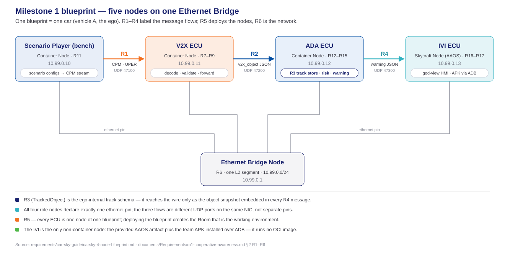
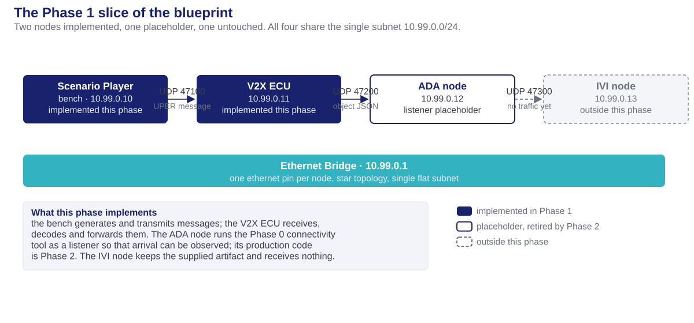
The V2X message as it exists on the air. The only message in the milestone that is not JSON.
| Defines | The ETSI CPM fields Milestone 1 uses, with their units and bounds — a profile narrowing a large standard to what the demonstration requires |
|---|---|
| Standard | ETSI TS 103 324 v2.1.1, release 2 |
| Direction | bench → V2X ECU, UDP 47100 |
| Encoding | ASN.1 UPER — 58 bytes for the nominal case, one message per datagram |
| Artifacts | r1-cpm-content.schema.json · r1-cpm-profile.md · golden-vectors/ — six content and byte pairs |
| Copies held in | V2X_ECU/contracts/ · Scenario_Player/contracts/ |
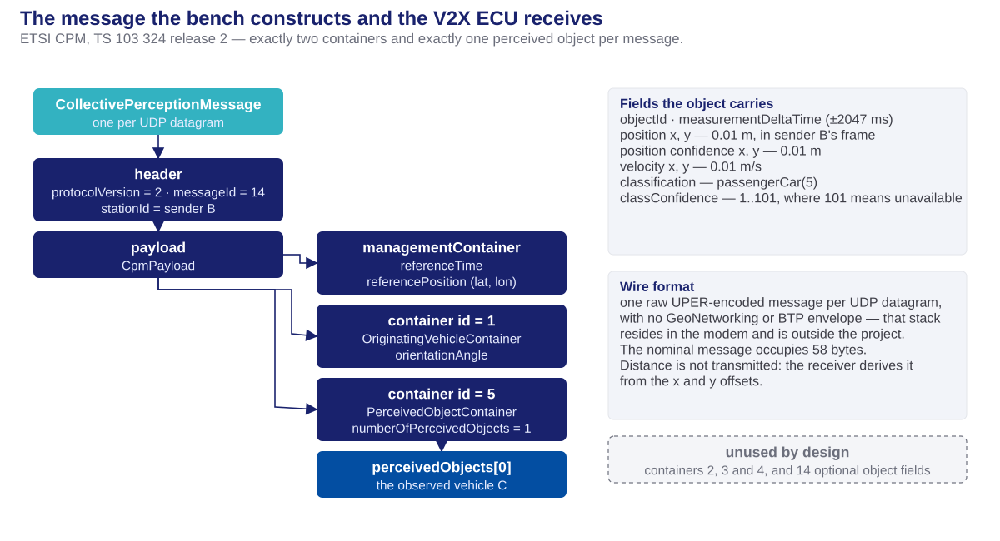
What the V2X ECU forwards inward once it has decoded the air message.
| Defines | One perceived-object update: identity, position, kinematics, confidence, and the time at which it was valid |
|---|---|
| Direction | V2X ECU → ADA ECU, UDP 47200 |
| Encoding | JSON, versioned, one datagram per object update |
| Artifacts | r2-v2x-object.schema.json · samples/r2-object.json |
| Copies held in | V2X_ECU/contracts/ · ADA_ECU/contracts/ |
One authority at the repository root, and a working copy inside each node that consumes it.
| Location | Holds |
|---|---|
contracts/ | The frozen originals: the schemas, the profile document, the six reference messages, the samples |
V2X_ECU/contracts/ | the air message, the object message |
Scenario_Player/contracts/ | the air message |
ADA_ECU/contracts/ | the object message, and the two later contracts |
contracts/sync-manifest.json lists every file that must match and contracts/check_sync.py fails the build as soon as one diverges. Phase 1 extended it from 36 to 47 tracked copies.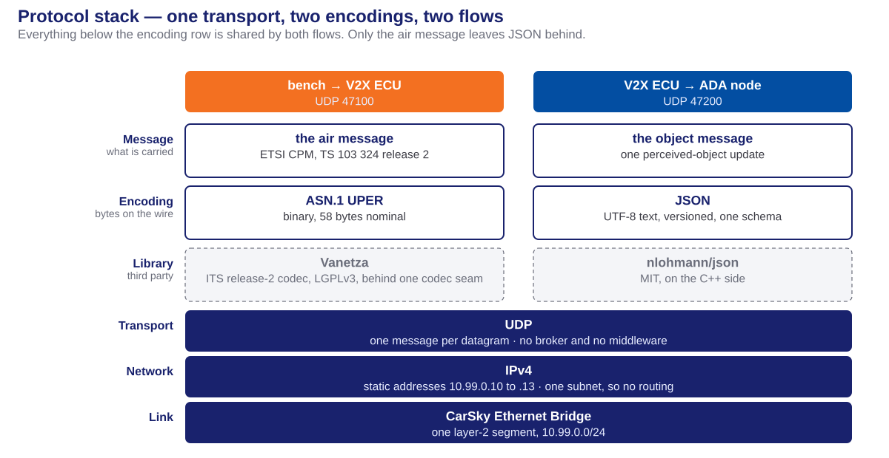
Three third-party dependencies. All are open source and Linux-compatible.
| Library | Licence | Serves | Function |
|---|---|---|---|
| Vanetza | LGPLv3 | the air message | ETSI ITS release-2 ASN.1 codec — the only component that handles UPER. Linked dynamically, ASN.1 targets only |
| nlohmann/json | MIT | the object message | JSON binding inside the V2X ECU |
| PyYAML | MIT | scenario configuration | Parses the bench's scenario files |
contracts/vanetza-pin.cmake and copied byte-identically into both builds.Three container images run in the phase's Room. Two of them are Phase 1 deliverables; the third is Phase 0 equipment kept in place.
| Node | Image | Role | Messages | State after Phase 1 |
|---|---|---|---|---|
| Scenario Player | m1-scenario-player:latest | Source — one object update every 100 ms | Produces the air message | A complete bench application: configuration loading, a kinematic model, an encoder helper process, and the transmission loop. Its own deck |
| V2X ECU | m1-v2x-ecu:latest | Relay — decode, validate, deduplicate, forward | Consumes the air message, produces the object message | A complete receiving application: the radio interface and its simulated modem, the four-stage receive pipeline, the forwarder, the event log, and in-container traffic capture. Its own deck |
| ADA node | m1-netcheck:latest — Phase 0's connectivity tool | Sink — prints each arriving body | Receives the object message, interprets none of it | A placeholder, retired when Phase 2 implements the node |
| IVI node | None — the supplied artifact, on a Skycraft node | Not exercised | None | Unchanged, and receives no traffic in this phase |
registry.hackathon-2.carsky.io; the placeholder is kept only so that the object message has somewhere to arrive and be read.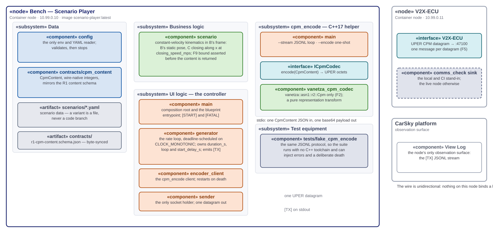
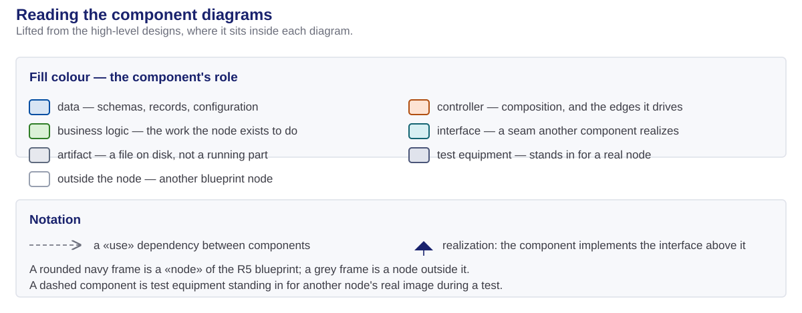
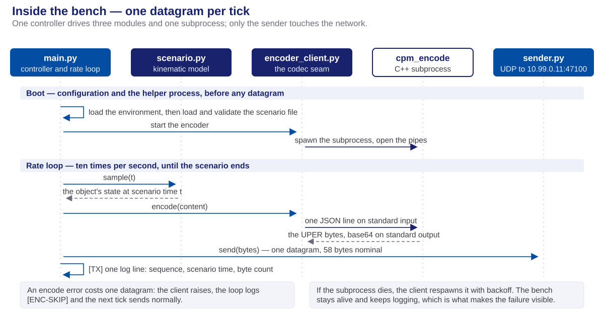
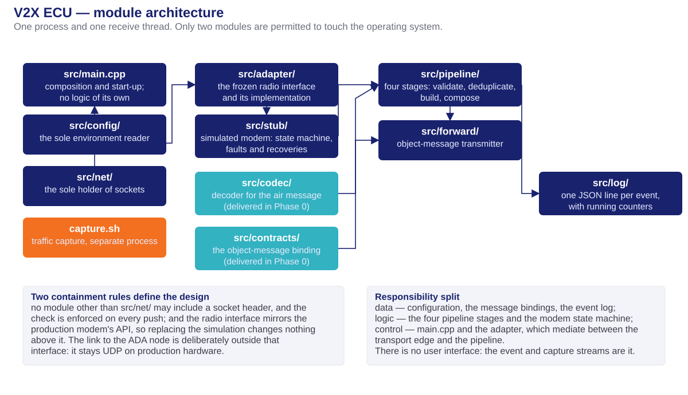
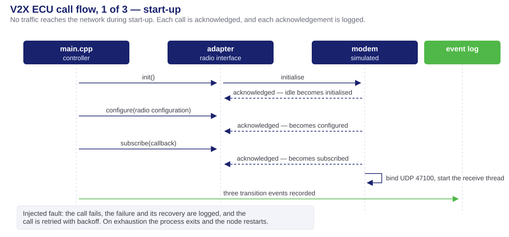
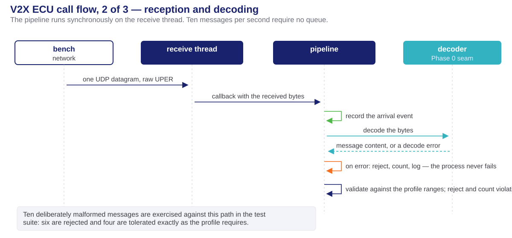
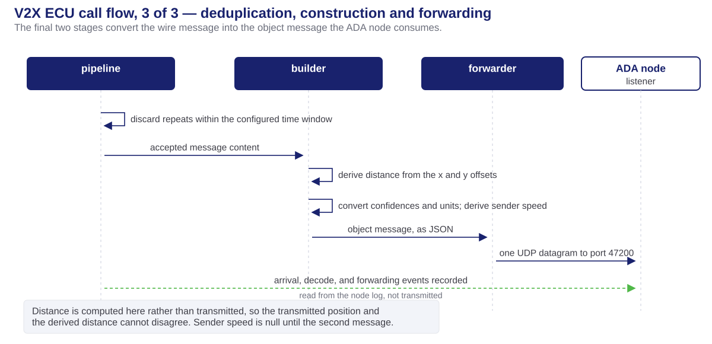
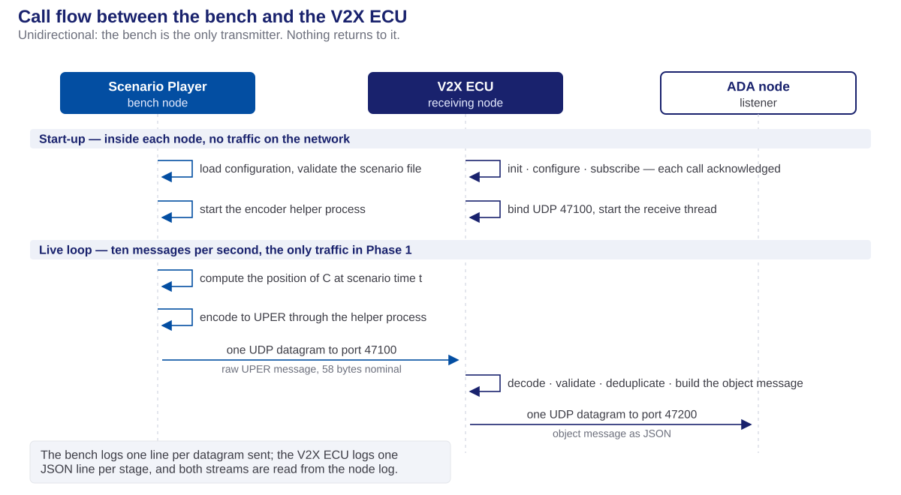
Four configurations, differing only in what stands at the seams and on the wire.
| Configuration | Scenario Player | V2X ECU |
|---|---|---|
| Unit — fakes at every seam | A fake encoder helper, and injected send, clock and sleep callables | A fake codec, a map-backed environment, injected clocks, a loopback socket |
| Integration — the real codec | The built cpm_encode over the six reference messages, byte for byte | The real decoder over the frozen corpus, and over a malformed corpus it must reject rather than crash on |
| Loopback — the comms check | — | The built application against a stand-in sink, driven by the reference messages, with the log chain asserted |
| Deployed — the Room | The bench against the real V2X ECU, evidenced from both node logs | The live bench upstream and the listener at the ADA address |
Scaffolding, not production code, but part of the design because the phase's evidence depends on it.
tools/comms_check/. The transmitter sends the six reference messages; the assertion confirms that every received message produced an arrival event, a decode event carrying the decoded content, and a forwarding event carrying the object message. It fails if any link is missing.Phase 2 implements the ADA node's track store and admission logic. The following are Phase 1 deliverables it need not re-establish.
Phase 1 — Design Concepts · Milestone 1 · FPT Hackathon 2026